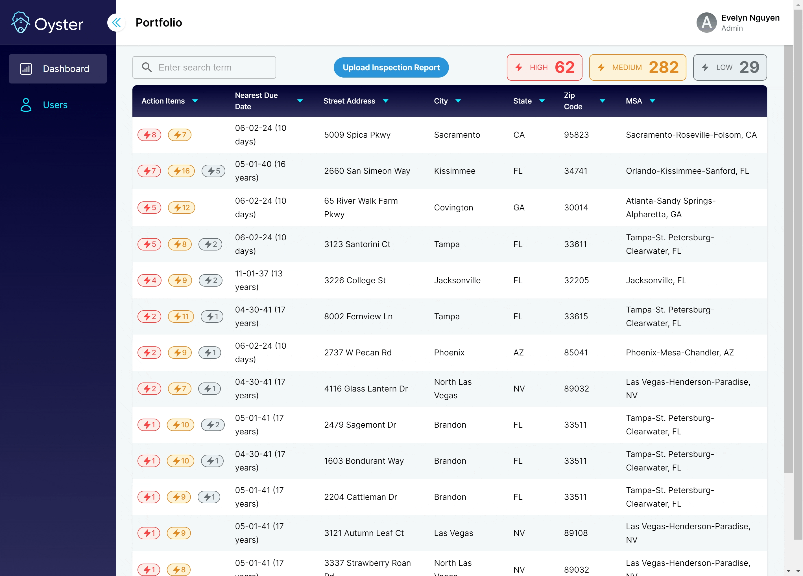
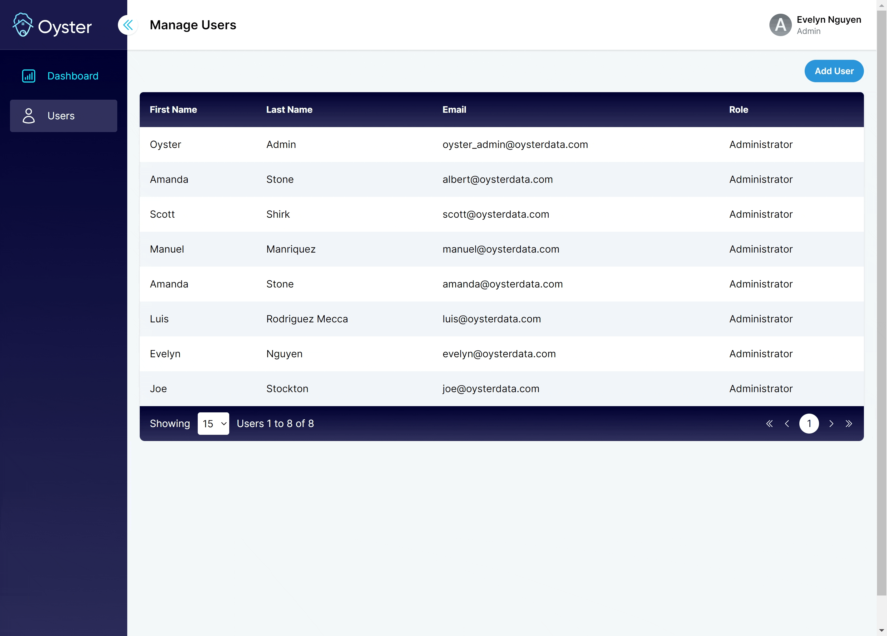

I was the only front-end engineer for Oyster Data, building the React portion of the application from conception to demo in only 4 months. Not only was I the main developer on React, I was in charge of integrating all of our APIs to the application. I even stepped into the backend role as necessary to optimize product development efficiency.
There were 4 major pages/views to develop: the portfolio dashboard, the property dashboard, the user management page, and the modal to add a service entry.
Portfolio Dashboard
The portfolio dashboard is the first page a property manager sees when they first log into the platform. They see a list of properties within their portfolio with surface-level details about the property, and they can sort the properties by different categories. They are able to filter through their properties with any search term. I built the entire UI and functionality of the property dashboard, rendering all action items and incorporating a link to the individual property dashboard. I also built the APIs that count existing action items by priority and filter through the properties.
Property Dashboard

The property dashboard is the center of information for a particular property. Users can view overarching property information such as address, number of bedrooms and bathrooms, sale price, sale date and estimated value. The Home Catalog section conveys information from an inspection report about a property's appliances and systems. The appliance section conveys dynamic information about actions that need to be taken, existing warranties, and manuals. Depending on the status of an action item, the item is redirected to a card labeled 'Pending,' 'Postponed,' or 'Ignored.' The property dashboard keeps track of all the actions that need to be taken to maintain a property.
Users can also maintain a library of property documents. They can upload documents and view them anytime they want.
Add Service Entry
To take action on these action items, users can click an action item and view details related to the task: warranty information, what the issue is, and previous services done on the appliance/system. If an action has been taken, they can record this with a new service entry.
Manage Users
Administrators can add new users on the 'Users' page.